遊びで植物を育てよう
2024/12/22
このボケの実にはタネが入っているのかな？。
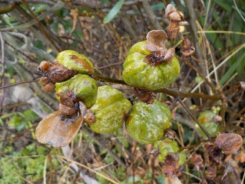
ボケの実が沢山出来ています。以前調べた時はタネがありませんでしたが、今回はどうかな？。
挿し木で増やしたものがあるのでタネから育てる必要はないですが、なんとなく気になる。
【ボケTOP】
【木TOP】
【園芸TOP】
2023/12/10
ボケの花を見てちょっと休憩。
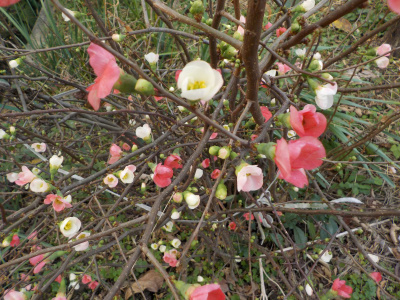
庭とか畑を行ったり来たりしてました。
ちょっと疲れたので休憩してボケの花の写真を撮りました。
自分の家で育ったものの写真を撮るのは楽しいものだと思いました。
【ボケTOP】
【木TOP】
【園芸TOP】
2023/03/11
小さいボケの木が開花しました。
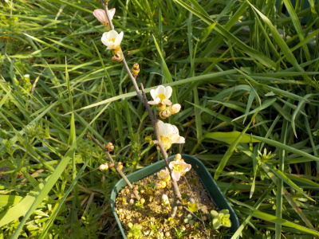
小さい鉢で小さく育てていますが、これだとちょっと物足りないですね。
もうちょっと鉢を大きくしようかな。
【ボケTOP】
【木TOP】
【園芸TOP】
2022/12/25
2020年に挿し木したボケが開花しました。
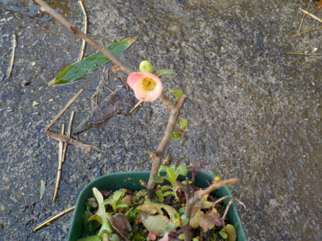
小さいボケの木に花が付きました。
小さいので物足りないです。来年はもっと大きく育てたいです。
【ボケTOP】
【木TOP】
【園芸TOP】
2022/10/16
ボケの花が咲きだしました。
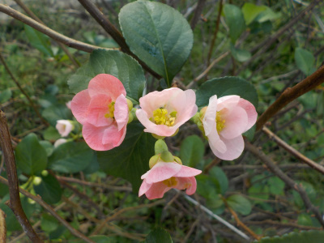
今年は開花が早いです。なんでだろう。
特に気候がいつもと違う感じはないんだけどな。
【ボケTOP】 【木TOP】 【園芸TOP】
2022/10/10
ボケの実がまとまって出来ていました。
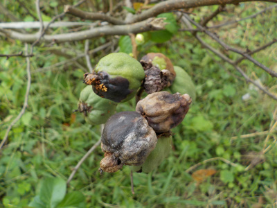
何故か実が集中して付いています。ボケの実自体があまり格好良くないので、キレイではないですね。
以前に実から種を採ろうとしたら種が入ってなかったんですが、今回はあるかな？
【ボケTOP】 【木TOP】 【園芸TOP】
2021/11/21
去年と同じ時期に木瓜の花が咲きました。
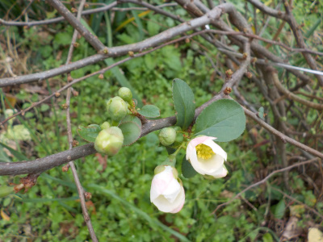
今年は暖かいって思っていましたが、去年と同じタイミングでボケの花が咲きました。
ニュースで平年より暖かいですとか、何月並みの気温ですって言い過ぎな気がします。
温暖化って言うなら旅行とかでエネルギーを使うなって言えばいいのに。
【ボケTOP】 【木TOP】 【園芸TOP】
2021/02/28
11月に咲いたボケですが、暖かくなったらまた咲きだしました。
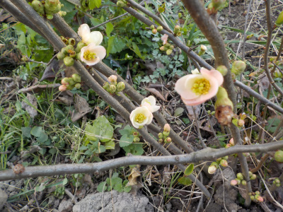
去年の11月に開花したボケですが、寒くなって開花が止まり、暖かくなってまた開花しました。
花があるといいですね。
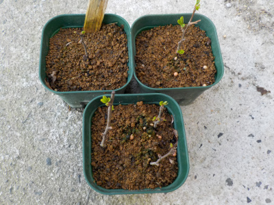
挿し木で増やしたボケは新芽の小さいのが出ました。
急成長しそうな感じがします。
【ボケTOP】 【木TOP】 【園芸TOP】
2020/11/27
ボケの実に種が入っていませんでした。
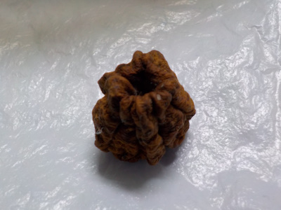
実をほっといたら茶色くなっていました。
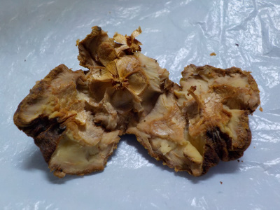
実が完熟したので種子が出来ているだろうと開いてみたら空っぽでした。
1つも種のない実なんてあるんですね。
種を植えるつもりで実が出来たときからずーっと見ていたので、とてもガッカリでした。
【ボケTOP】 【木TOP】 【園芸TOP】
2020/11/23
クサボケの花が咲きました。
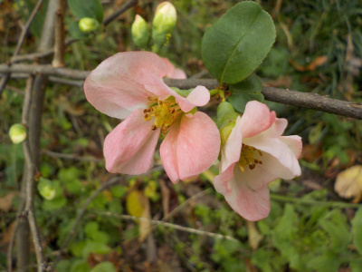
この木はクサボケだと思っていたんですが、クサボケの花の時期は春だそうです。
冬に咲くのは寒木瓜（カンボケ）らしいので、この木はカンボケかな。
【ボケTOP】 【木TOP】 【園芸TOP】
2020/10/18
ボケの挿し木に根っこがあったので鉢に植え替えしました。
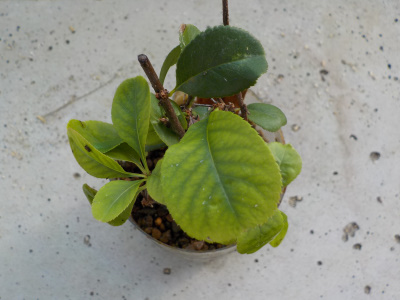
ペットボトルの挿し木で容器が透明なので、下から根っこが確認出来ました。
葉っぱも多く窮屈なので植え替えです。
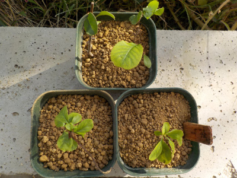
5本挿し木して5本根っこが出たので、成功率が100％でした。
ボケは強いですね。
【ボケTOP】 【木TOP】 【園芸TOP】
2020/10/11
ボケの実が落ちました
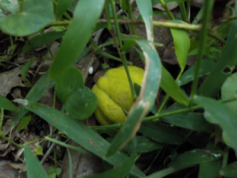
青くて硬いままボケの実が落ちました。
これが普通なのかな？
種が欲しいので実を回収しました。種がまだ出来ていないかもしれないので、しばらく置いておきます。
【ボケTOP】 【木TOP】 【園芸TOP】
2020/09/22
ボケの実が青いままです。
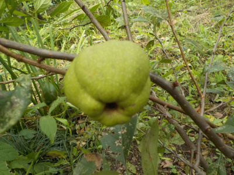
ボケの実が少しずつ大きくなっていますが、色が青いままです。
いつ熟れるんでしょうね。
種を採ろうと思っていますが、熟れていないので採れません。
【ボケTOP】 【木TOP】 【園芸TOP】
2020/06//07
ボケの挿し木一か月後です。
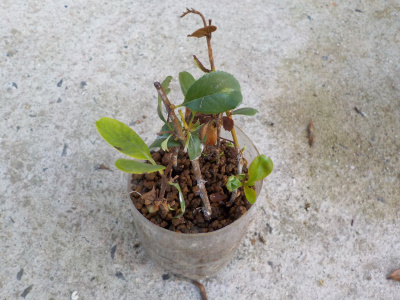
まだ一月なので根っこがあるか分からないです。
もうちょっと様子をみようと思います。
【ボケTOP】 【木TOP】 【園芸TOP】
2020/05/10
ボケの挿し木をしました。
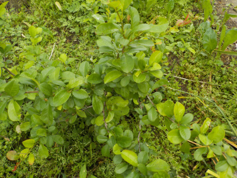
ボケの木があるんですが、地植えだと丈が低くて目立たないです。
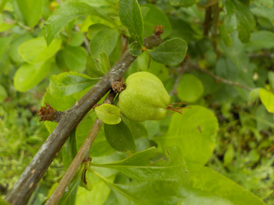
実が出来ていますが、よく探して見ないと分からないです。
鉢植えが向いていると思うので、挿し木して増やしたものを鉢植えにしようと思います。
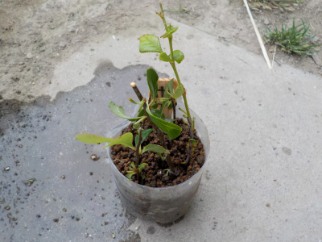
5本挿し木しました。
何本成功するかな。
【ボケTOP】
【木TOP】
【園芸TOP】
盆栽ではないけど、小さい鉢で育てたいです。
【おいしいものを食べよう。】【しっかり寝よう。】
【ソロ活をしよう!】【季節感のあることをしよう。】【動画視聴はほどほどに。】【当サイトの全てのコンテンツは無断転載禁止です。】